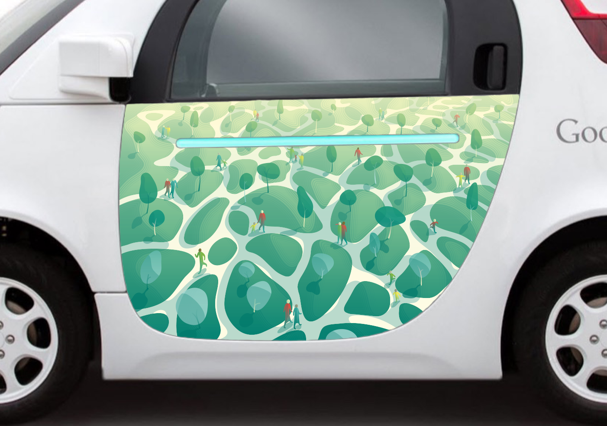
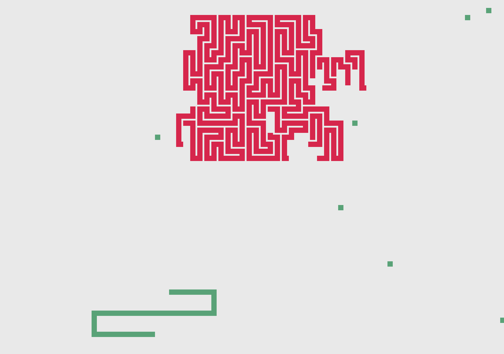
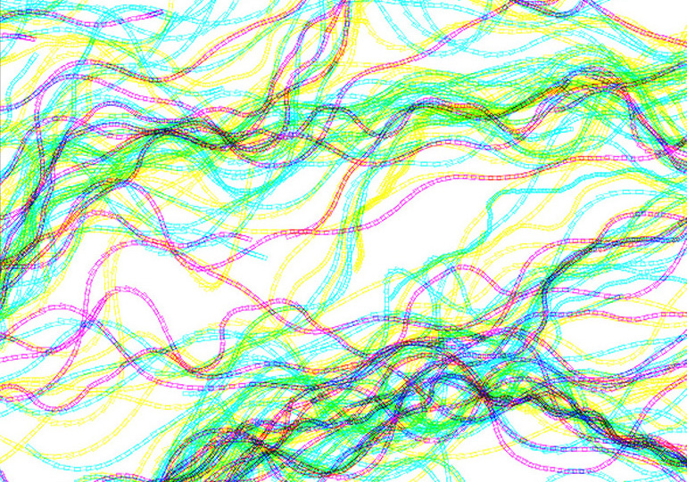

Artwork for Google's Self-Driving Car
September 2015
Print
50.5” x 30.5”
50.5” x 30.5”
My interpetation of a healthy community is one with green, public spaces that allow people to meet, interact, bond, and thrive. This illustration will be featured on Google's self-driving car starting in November 2015.

Snake-Pong
Arcade Game
Arcade Game
This game was made with the intention of being a hybrid between two classic arcade games, Snake and Pong. The objective of the game is hit the red mass with balls, explosives, and other objects until it is obliterated.

Vector Field Editor
This editor allows users to experiment with and tweak the properties of a vector field. Some examples of properties that can be customized are: frequency, velocity, color mode (CMYK, RGB, etc.), and color distribution.
